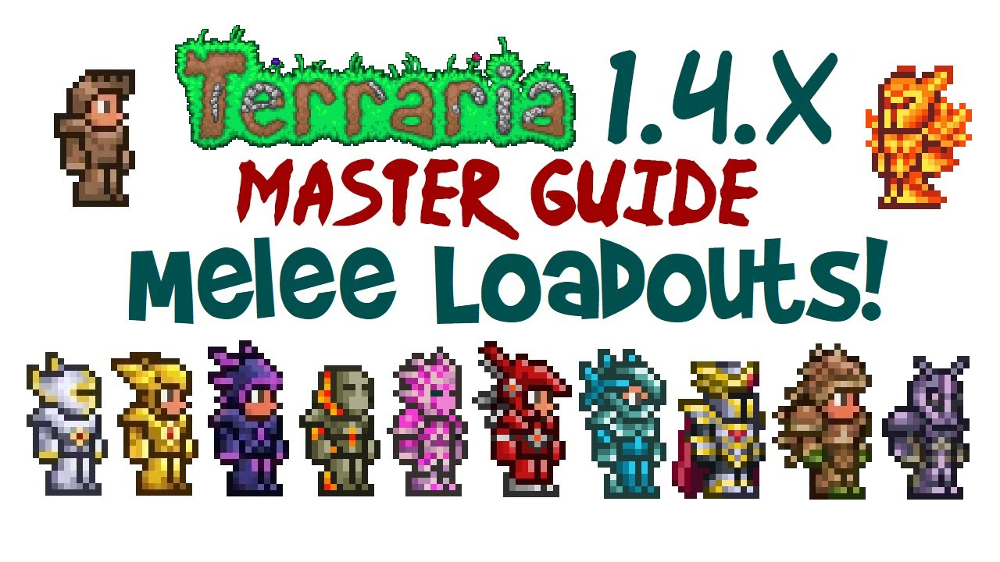

Las clases
Terraria sin mods tiene hasta esta este momento en el que redacto este documento 4 clases las cuales son:
-Cuerpo a cuerpo (Guerrero)
La clase de cuerpo a cuerpo cuenta con una alta Defensa y un control de multitudes decente, pero muchas armas de cuerpo a cuerpo tienen un alcance de ataque corto, y aquellas que son viables a distancia tienden a hacer menos daño que sus contrapartes de corto alcance. Esto anima a los usuarios de armas de cuerpo a cuerpo a utilizar su defensa para resistir los golpes mientras atacan con sus armas de corto alcance más fuertes. Las armas de cuerpo a cuerpo incluyen espadas, lanzas y yoyós.

-A distancia (Rango)
Los arqueros pueden atacar desde la distancia, infligiendo un daño alto a un solo objetivo, con daño de perforación o de área. Utilizan armas como arcos y pistolas, así como objetos arrojadizos. Los usuarios a distancia deben adquirir constantemente Municiones, a menos que utilicen la Carcaj eterno o la Petaca de mosquete eterna o utilicen un arma a distancia que no requiera munición
-Magos (Armas mágicas)
Los magos son frágiles pero muy variados en su estilo de ataque, a menudo utilizando mecánicas especiales como búsqueda automática de objetivos, robo de vida y daño de área. Se ven limitados por su dependencia del Maná, que se regenera muy lentamente a menos que esté activo el aumento de regeneración de maná. Los usuarios de magia a menudo pueden mantener su maná usando estrellas de maná al enfrentarse a muchos enemigos a la vez, pero deben crear o comprar pociones de maná si desean recuperar maná instantáneamente durante las peleas contra jefes. La mayoría de las armas mágicas anteriores a Plantera están especializadas en el control de multitudes, con un daño individual más débil que otras clases.
-Invocador
Los invocadores infligen la mayor parte de su daño utilizando súbditos autónomos y/o centinelas, y sus ataques suelen tener una excelente precisión. Sin embargo, la mayoría de los conjuntos de armadura de invocación tienen poca defensa a cambio de su alto potencial de daño. Los Látigos son armas principales que se enfocan en los invocadores y aumentan su daño. Si bien muchos jugadores aceptan desafíos en los que solo se permite el daño de invocación (Látigos, armas de invocación y Monturas), la clase de invocación fue equilibrada teniendo en cuenta la idea de que el jugador también use el arma normal más fuerte disponible además de los súbditos y los látigos
-Notas generales
Cada clase adquiere habilidades más complejas a medida que avanza el juego, lo que permite una mayor variedad estratégica en el combate. Se aconseja a los jugadores que prueben todas las armas que encuentren para determinar cuál les funciona mejor. También se recomienda usar pociones de mejora y pociones de curación para aumentar la eficacia y la supervivencia en combate (especialmente durante eventos y combates contra jefes).
En general, se recomienda centrarse en equipo que beneficie a una sola clase. Los espacios de equipo son limitados, y muchas armaduras y accesorios solo benefician a una clase específica, especialmente en etapas avanzadas del juego. Los invocadores son una excepción a esta regla, ya que los invocadores pueden infligir daño junto con armas de cuerpo a cuerpo/a distancia/mágicas, por lo que el equipo de invocación siempre proporcionará un beneficio mientras se utilicen invocadores. Todas las clases pueden usar al menos dos súbditos en todo momento, incluso sin utilizar equipo de invocación (usando una Mesa cautivadora), por lo que se recomienda siempre aprovechar estos espacios libres independientemente de la clase principal.
Cabe destacar que si bien es beneficioso centrarse en una sola clase entre cuerpo a cuerpo/a distancia/magia a la vez, hay poco beneficio en especializarse en una clase a lo largo de una partida completa, y se debe considerar seriamente cambiar de clase si se obtiene un arma poderosa de una clase diferente.
Incluso cuando no se utiliza específicamente un conjunto híbrido, las armas de respaldo de otra clase pueden ser útiles si la situación requiere un arma diferente. Por ejemplo, las Calaveras malditas gigantes pueden representar una amenaza para los no invocadores, pero un látigo como el Durendal puede eliminarlos fácilmente incluso sin bonificaciones de daño de invocación.
Aqui hare una pequeña guia para cada clase en los diferentes puntos del juego